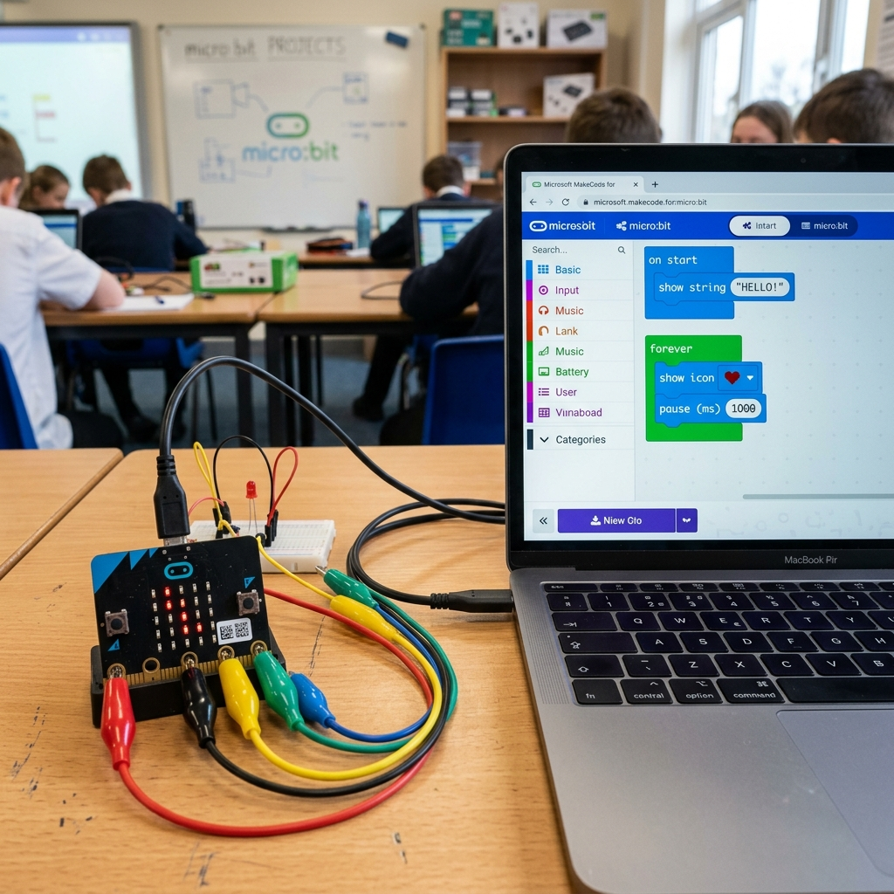

What This Stage Was About
In this stage, my student learned how to use the Micro:bit as a programmable controller. He explored the MakeCode interface, practiced using input and output blocks, and connected the Micro:bit to simple circuits to see how code could control physical components.
Lesson Plan
Digital Tools We Used
Micro:bit PICRAT: Creative–Transformation
MakeCode PICRAT: Active–Transformation
Digital Notebook PICRAT: Passive–Replacement
Student Artifacts

What We Did
- learned how to use MakeCode
- programmed LEDs, buttons, and simple outputs
- connected the Micro:bit to physical components
- tested and debugged code
My Reflection
He quickly understood how code could control real‑world systems.
Student Reflection
“I liked making the Micro:bit do things with the wires.”
ISTE Standards Addressed
1.1 Empowered Learner
The student explored the Micro:bit’s built‑in features and used the MakeCode simulator to test ideas independently. They also learned how to connect the Micro:bit to a breadboard using the T‑type adapter, giving them control over how power and signals flowed through their circuits and building confidence in navigating both digital and physical tools.
1.3 Knowledge Constructor
The student identified and labeled Micro:bit components, explored their functions, and synthesized observations from guided exploration and prior Snap Circuits knowledge. They also learned how breadboard power rails, rows, and columns work, constructing foundational understanding of how real circuits are organized and connected.
1.4 Innovative Designer
The student began applying design thinking by creating simple programs in MakeCode and wiring basic circuits on the breadboard. They selected components, mapped pins, placed parts into correct rows, and iterated on both wiring and code to make the Micro:bit respond the way they intended.
1.5 Computational Thinker
The student used logical reasoning to understand how Micro:bit code executes and how physical circuits behave. They distinguished between one‑time and repeating events, tested code in the simulator, and applied debugging strategies to fix wiring issues such as incorrect rows, reversed polarity, or incomplete power paths.
1.6 Creative Communicator
The student communicated their understanding by labeling Micro:bit diagrams, documenting their first program with screenshots, and explaining how their wiring and code worked together. Their digital notebook entries showed how physical circuits and digital logic combine to create a working system.